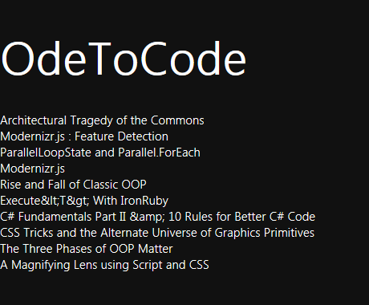

In this lab, we'll build a simple RSS reader.
You'll be working in the before directory of this lab. A completed version of the application exists in the after folder.
<body>
<h1>OdeToCode</h1>
<div id="status"></div>
<div id="posts"></div>
</body>
document.getElementById("status").textContent = "Downloading";
WinJS.xhr({ url: "http://feeds.feedburner.com/OdeToCode?format=xml" })
.then(onDownloaded, onDownloadError);
function onDownloadError() {
document.getElementById("status").textContent = "Error";
}
function onDownloaded(xhr) {
document.getElementById("status").textContent = "";
var items = xhr.responseXML.selectNodes("//item");
var posts = document.getElementById("posts");
for (var i = 0, len = items.length; i < len; i++) {
var item = items[i];
var newDiv = document.createElement("div");
newDiv.textContent = item.selectSingleNode("title").text;
posts.appendChild(newDiv);
}
}

<div id="postTemplate" data-win-control="WinJS.Binding.Template">
<div data-win-bind="textContent: postTitle" class="postTitle" ></div>
<div data-win-bind="textContent: postDate" class="postDate" ></div>
</div>
.postTitle
{
font-weight:bold;
}
.postDate
{
font-size:smaller;
}
<script src="winjs/js/base.js"></script>
<script src="winjs/js/ui.js" type="text/javascript"></script>
<script src="winjs/js/binding.js" type="text/javascript"></script>
<script src="winjs/js/controls.js" type="text/javascript"></script>
<script src="winjs/js/animations.js" type="text/javascript"></script>
<script src="winjs/js/uicollections.js" type="text/javascript"></script>
<script src="winjs/js/wwaapp.js" type="text/javascript"></script>
function onDownloaded(xhr) {
document.getElementById("status").textContent = "";
var items = xhr.responseXML.selectNodes("//item");
var posts = document.getElementById("posts");
var template = WinJS.UI.getControl(document.getElementById("postTemplate"));
for (var i = 0, len = items.length; i < len; i++) {
var item = items[i];
var post = {
postTitle: item.selectSingleNode("title").text,
postDate: item.selectSingleNode("pubDate").text
};
template.render(post)
.then(function (result) {
posts.appendChild(result);
});
}
}
<div id="posts" data-win-control="WinJS.UI.ListView"
data-win-options="{itemRenderer: postTemplate}">
</div>
function onDownloaded(xhr) {
document.getElementById("status").textContent = "";
var items = xhr.responseXML.selectNodes("//item");
var posts = document.getElementById("posts");
var template = WinJS.UI.getControl(document.getElementById("postTemplate"));
var data = [];
for (var i = 0, len = items.length; i < len; i++) {
var item = items[i];
var post = {
postTitle: item.selectSingleNode("title").text,
postDate: item.selectSingleNode("pubDate").text
};
data.push(post);
}
WinJS.UI.getControl(posts).dataSource = data;
}
Congratulations! You've built an app with WinJS!